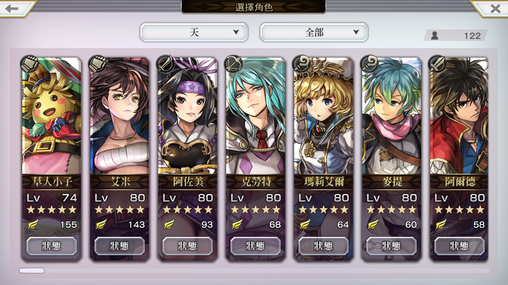
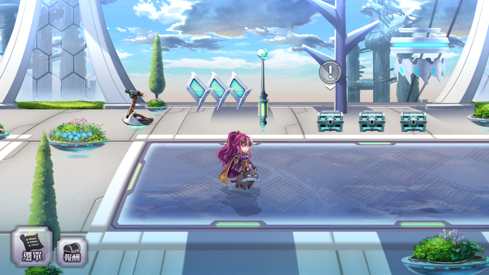
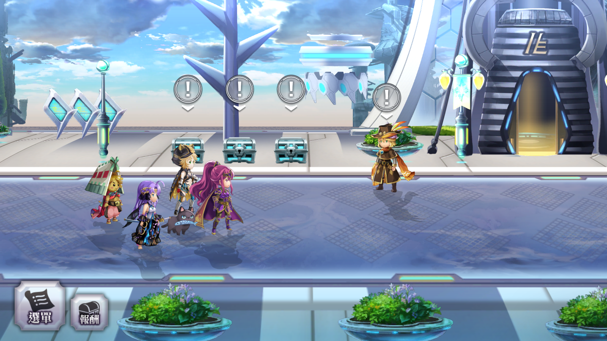
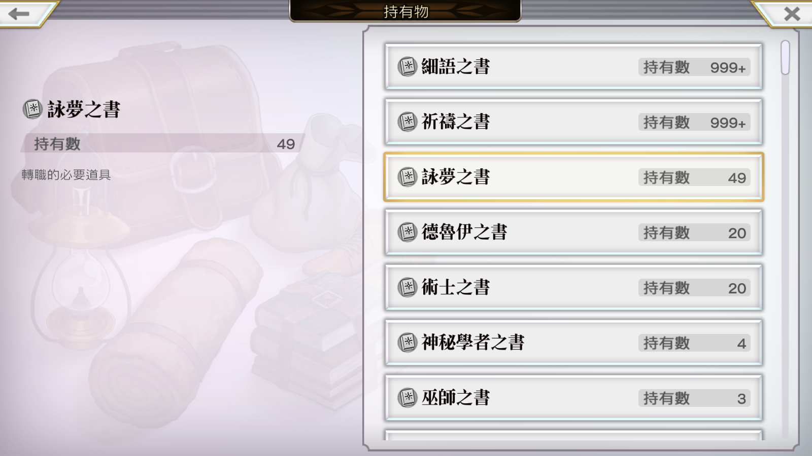

本次日記算是個回顧吧，
有感而發，想記錄一下我遊玩 Another Eden、穿越時空的貓的一段經歷。
我是從穿越時空的貓，國際版開服就開始玩的玩家，我到現在還記得當初的感動，印象是從凌晨3點就開始刷首抽，當時很單純，就是想要瑪莉+任一五星開局就好，由於一開始的劇情十分的長，好像要20分鐘才能刷一輪，當時就從凌晨一路刷直到早上差不多要去研究所，
到了研究所，早上也沒啥精神，就想說 繼續刷好了，就開著模擬器多開四台繼續刷XD
刷到了快中午12點，終於出了 5星瑪莉+5星麥提(水法)+4星杜娃(土法)，當時的感動我還記得，下午也渾渾噩噩的度過了，接著就開始這波濤洶湧的旅程。
在一周目通關後，又遊玩了一段時間，但當時就只能刷紅綠票，沒別的活動了，外傳 魔劍1開始時想說 終於有事情做啦，但也很快就農玩了，接著放置一段時間後，就進行了短暫(?)的退坑。中間有回歸一下，依稀記得是要跟P5的第一次聯動還是二周年的樣子 忘了，活動後的X天(翻了一下聊天紀錄，2020/04/24回歸的)總算回歸，一路認真地刷到了今天(2020/12/13)，又撐了8個月~ 撒花~
目前的戰果是 ! ：

草人155、艾米143、阿佐美93、阿爾德58、學妹40、伽琉25
不大不小也留下了我走過的痕跡
但今天日記的重點是! 沒錯，又走到了一次終境!

秉持著佛系玩法的我，對於幻璃境一向是有上級卷軸就好的心態，但就這樣就一路到了終境，心情也跟終境的天空一樣的晴朗，選了古武之槍的異節。
在這心態下，快速地刷了一場印象空間AD(學妹)，然後就出了白卷，想說 剛剛終境 現在該來還債了吧，就選了跟剛剛走法不一樣的路線，沒想到就越走越遠…

沒錯! 竟然又走到終境了呢! (隊伍雖然一樣，不過不是同樣的終境RRR)
當下的心情十分的愕然，心中的喜悅不知向誰宣洩，就跟已退坑的Jimmy學長分享了。(古武之槍的異節 4/5)
趁這機會，也順便看了一下我的夢書

49本! 除了邂逅角外，我好像沒有特別升角色，因此自覺這夢書的數量不少了! (沒想到後來在TG的群組看到有人曬他夢書120本………恩)
總結：
時空貓是款不錯的遊戲，在當今快節奏的手遊環境下，這種傳統的日式RPG靠著優美的畫面以及動人的BGM也撐出了一片天，雖然打著打著也快要萌生再次退坑的念頭，但這念頭一生的當天的晚上，就看到了時空貓要跟傳說系列合作的消息 …
恩，我又活過來啦! 再撐個一年!